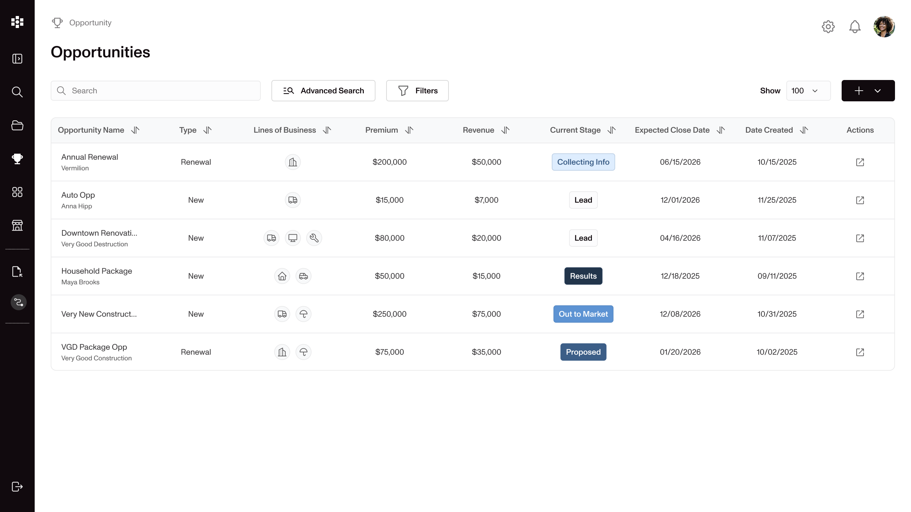
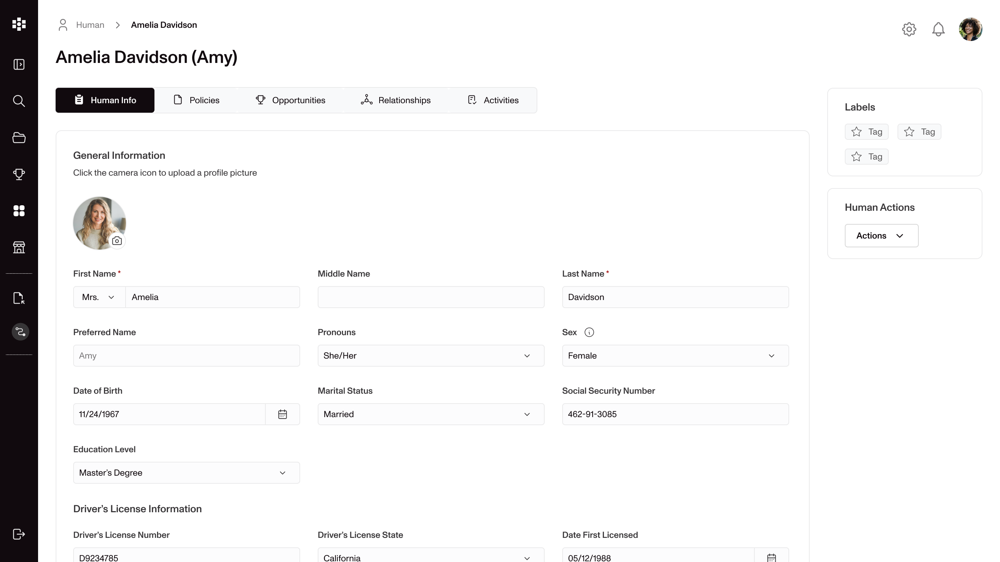
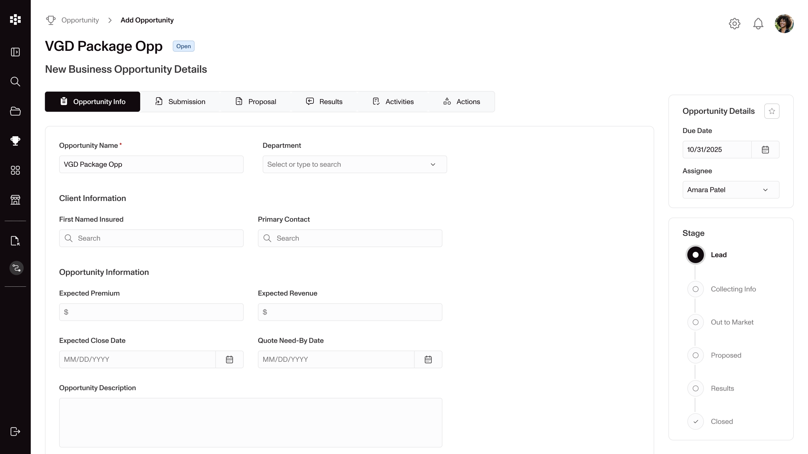
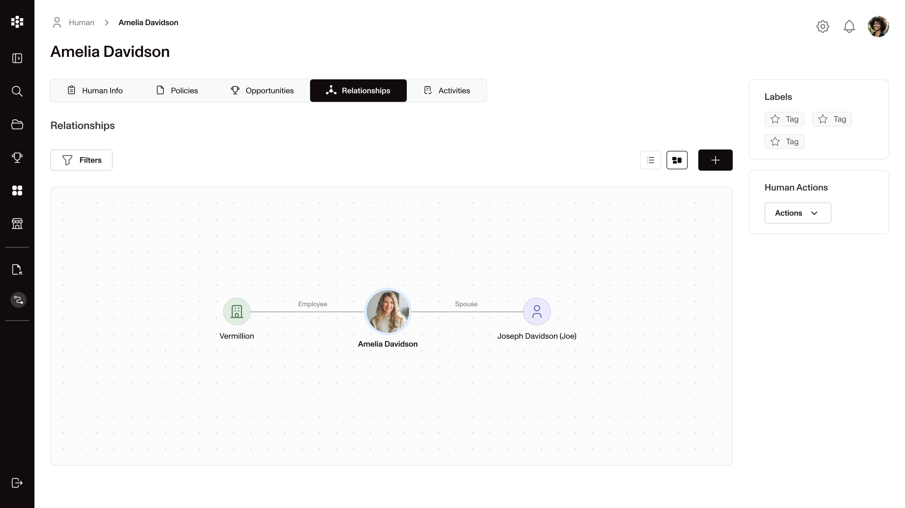

Irys Insurtech is a platform built by former agents to redefine how insurance professionals work, simplifying complex systems, unifying tools, and eliminating repetitive tasks to create a modern, intuitive experience.
I joined Irys as a junior designer and soon took ownership of the end-to-end UX for a key area of
the platform focused on insurance lines of business. Collaborating closely with industry experts and
product teams, I translated user needs into UX solutions that simplified complex flows and improved
overall usability.
Later, I led the transition to the company’s new branding, building a design system from scratch to
unify visuals, components, and interaction patterns across the platform. As the sole designer, I
continued evolving the product balancing usability, scalability, and business goals.
The Opportunity Case, where agents manage quotes, proposals, and submissions, was one of the most
complex areas in Irys.
Although a design already existed, agents reported confusion and difficulty tracking the progress of
each opportunity. Our goal was to simplify the experience, providing agents with greater clarity and
confidence at every stage.
Working closely with the product team and industry experts, we took a deep dive into the existing
workflow to identify the pain points.
Through user feedback sessions and various iterations we focused on improving navigation, visibility of
progress, and data entry.
From there, we transformed the experience by:
Reframing the workflow to make each stage clear, predictable, and easy to follow
Reducing cognitive load by grouping related actions and simplifying data entry
Improving navigation for smoother, more intuitive movement through the flow
Aligning with the new brand to ensure a cohesive look and feel across the platform
The redesign turned a complex, confusing workflow into an intuitive, step-by-step experience where agents could now track opportunities effortlessly, complete actions faster, and focus on what truly matters.
The new flow was met with positive feedback from users, and it set a foundation for consistent, scalable design across the platform.



